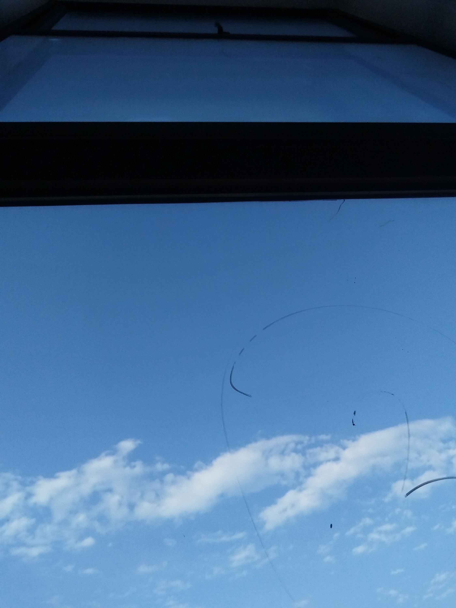
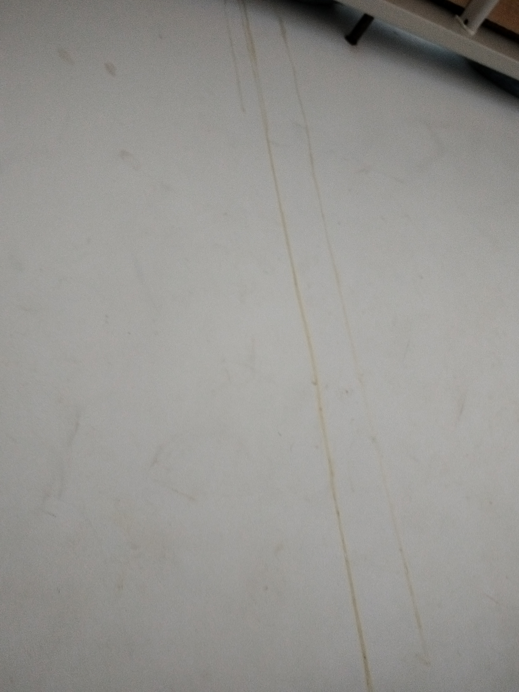
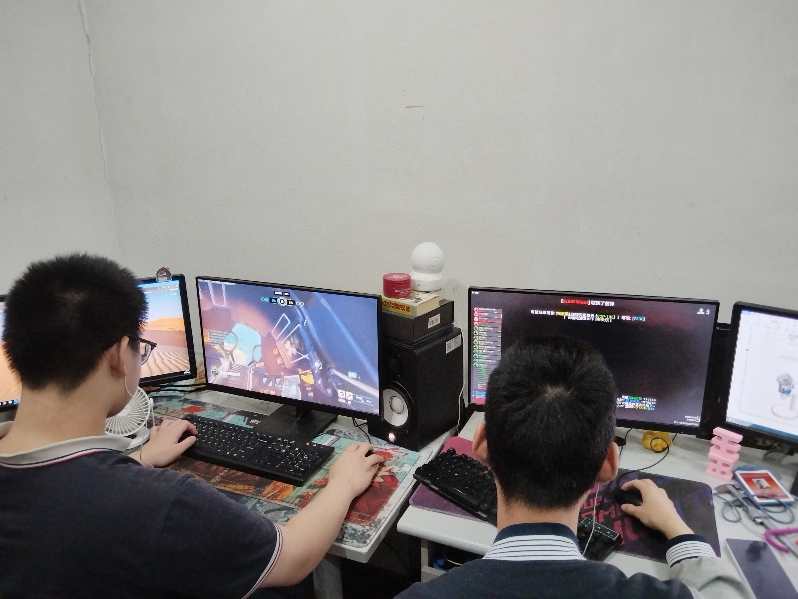
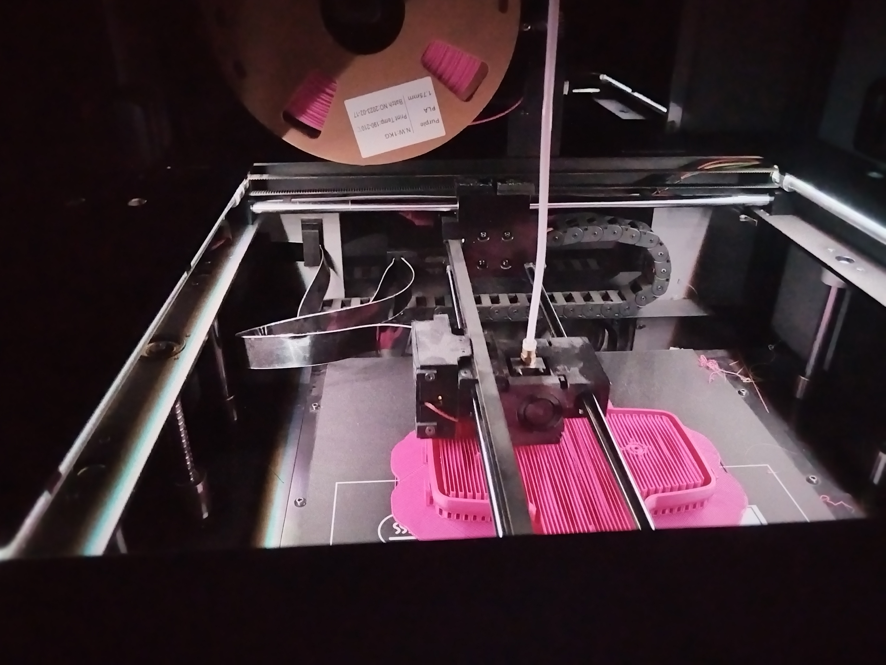
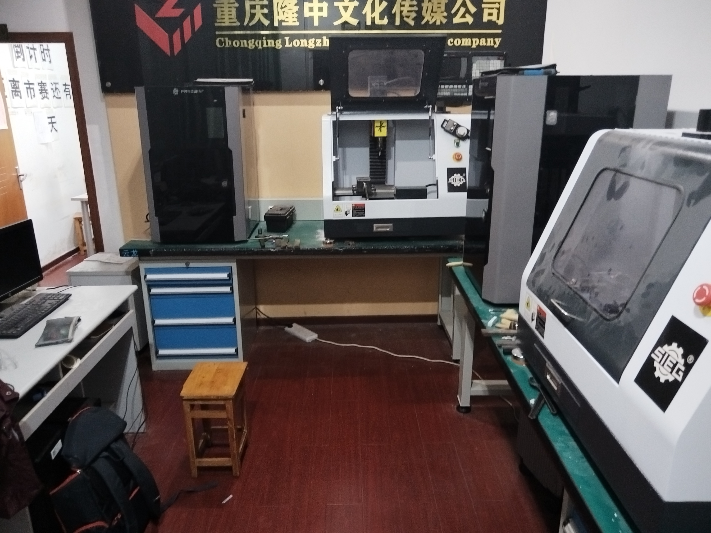
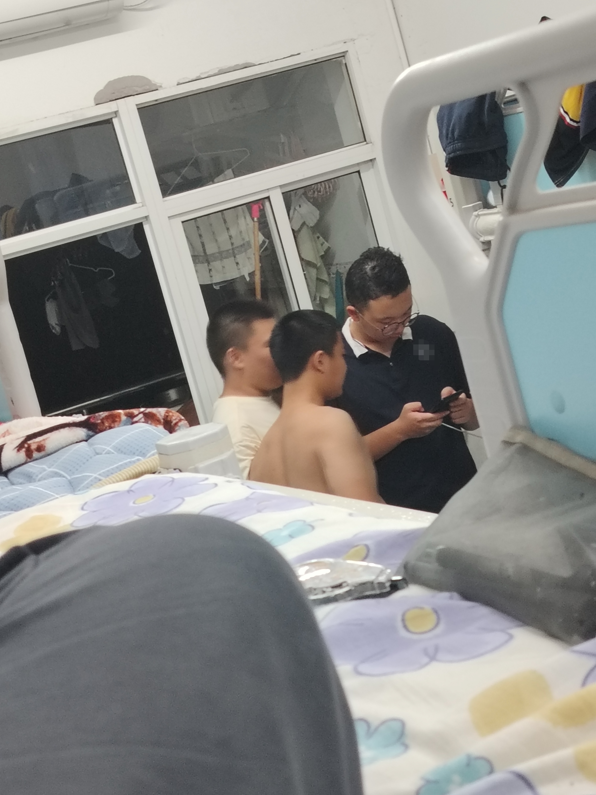
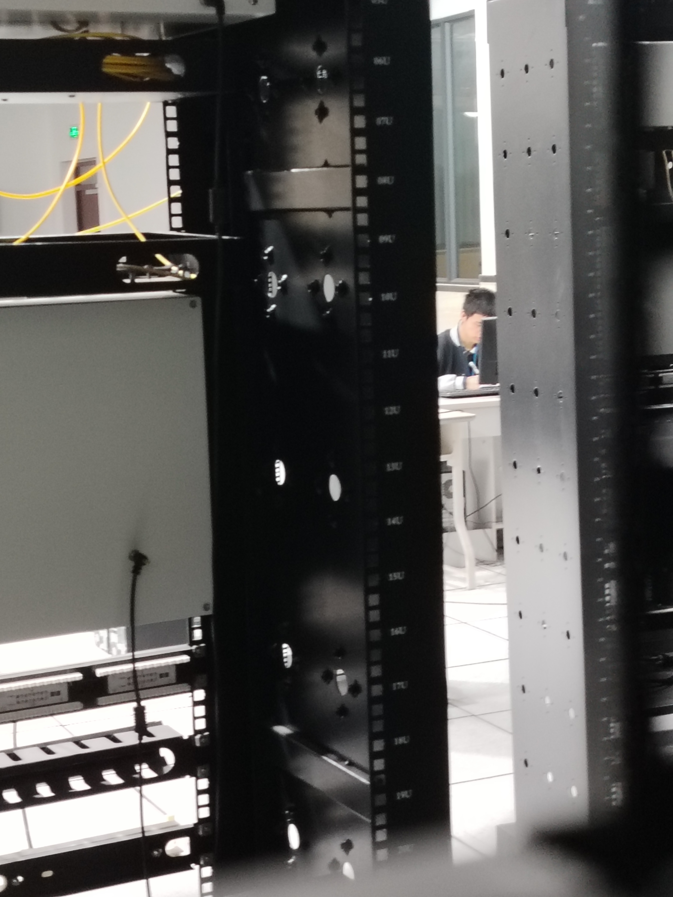
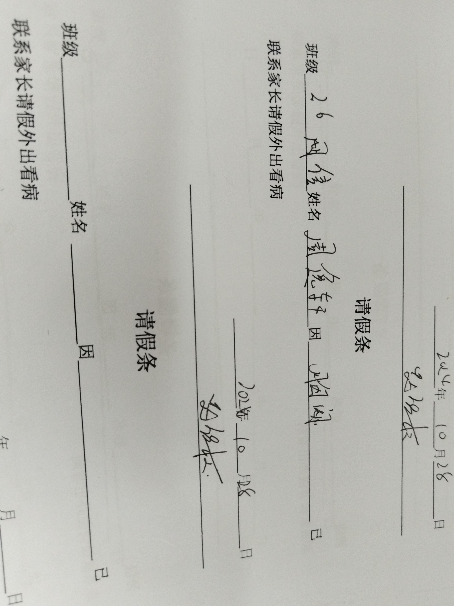
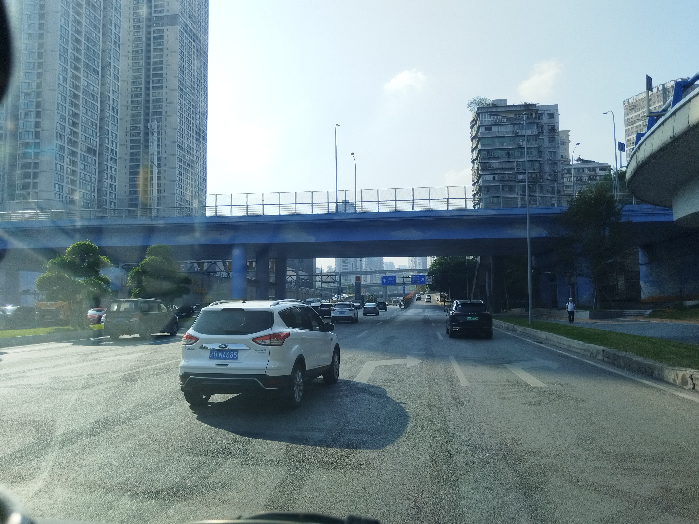
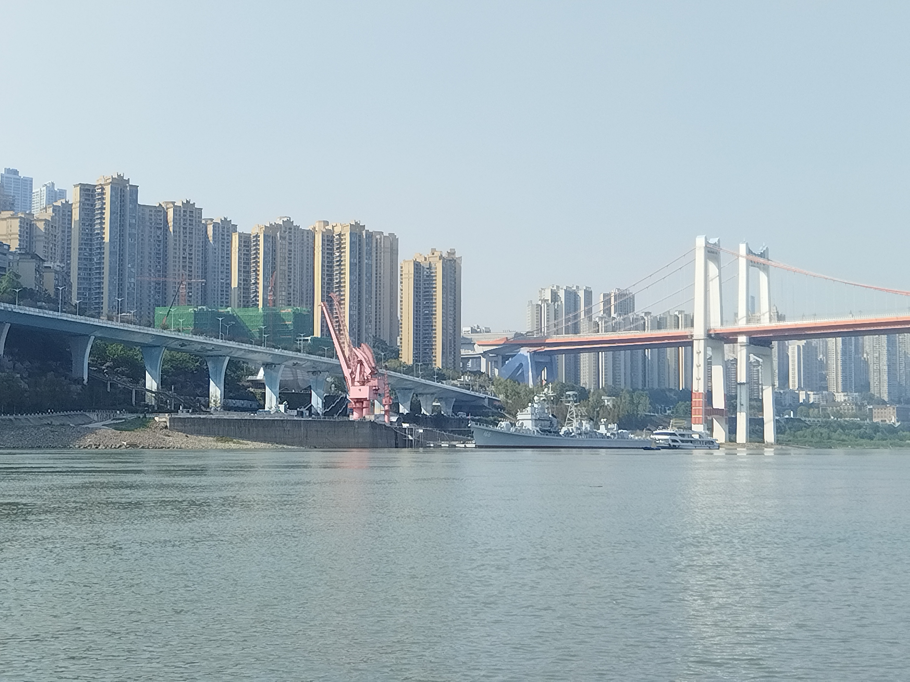

# **第一部分 - 第三节** ## **引言** > And who'll deny that's what the fightings all about ? > <br><br>Us and Them ———— Pink Folyd <table> <tr> <td></td> <td><img src="../../imgs/IMG_20241021_193434_resized_20241025_102903888.jpg "></td> <td></td> </tr> <tr> <td>10.23 下午摄于实训室窗边</td> <td>10.21 晚自习在代强的实训室</td> <td>我的上铺（刘恭麟）留下的神秘痕迹<br><del><i>是个种马,不知道忍了多久</i></del></td> </tr> <tr style="background-color: lightgrey;"><td colspan="3"></td></tr> <tr> <td></td> <td></td> <td></td> </tr> <tr> <td>左：张子涛同班同学，在玩我叫不出来名字的游戏<br>右：王优，在玩 <i>SCP秘密实验室</i> </td> <td>他们的机器（3D打印）</td> <td>代强的实训室</td> </tr> </table> ## **24.10.14 ~ 10.26** 被分流的人们真的毫无能力吗？不完全是，这只是制度的借口，当然这里涉及的东西很敏感，我也没有那个实力去批判因为我也是被分流的一部分。抛开政治不谈，只讨论个人，我们发现他们的分布极其分散，好人不好坏人不坏，这里的好人就是那些没有被“分掉”的人或胜利者，坏人则相反。这太绝对了，没有人是真正的好人也没有人是坏人，一个人是阴阳两面的总会有阴晴圆缺的时候，偏题了，这只是对人善恶的基本思考。他们也并非没有能力，你会发现在他们之中也不乏很厉害的人，他们可以对日常生活了如指掌却无法控制自己， 今天晚上(10.14)八点多，我的平板忘在教室里面了，我回去拿。操场上有不少人，跟那里一样，我笑了，这是我头一次在放学后从寝室出来，往上走去教学区那没几个人，在接近校门口时往左就可以看到万家灯火，五颜六色，像以前一样靠在阳台的栏杆上，皮草城三个大字在黑夜中显得格外清晰，在半夜偶尔出现高速行驶的车辆，除此之外就只有寂静，到早上，灰白色雾气弥漫在头顶上方，酒槽味道漂浮在早晨的空气中，然后，离最后一天越来越近。 每当我回陷入回忆，我的灵魂就像是回到过去，一样的感觉、知觉、视觉，就像是穿越到过去，回忆中的东西也完整的将感觉回馈给我，这不是“既视感”这像是一种创伤。 --- 拥有时毫不在意，失去时才学会爱。如何去爱？如何避免失去后陷入回忆的湍流。 他猛的跑出门外，发疯似的跑向操场，背对着月亮紧紧的盯着漆黑的天际线一遍一遍喊着他的名字，视线逐渐模糊，在倒地前他感到无限幸福，热血充满他炽热的内心。人们发现他时他的后背、额头以及手心都是黏腻的汗水，身体还尚有余温，只剩挂在下嘴角的幸福笑容。 --- 又是曾经的故人，中午（10.16）在梦开始的那个机房，见到了久未谋面的张子涛，我们（与张行）跟他聊了二十分钟，知道了一些发生在比赛的事情，不知为什么，感觉燥热的心逐渐宁静，当天下午，张行在曾那里第一次知道了关于比赛，曾也一无所知，至少，我知道我还可以再等一等。 下午（10.16）曾的课，全班37人迟到，理由很多却从来不在自己身上找问题，自我欺骗和一味的逃避，他们的骗术可以把自己都骗迷糊，连自己都分不清虚实。 10.17中午，计算机部开会，把我赶出去了，包括刚上楼的周易楠。回教室，扑面而来的无聊与绝望感立刻将我包围，我若从来没有去过什么技能大赛，每天大概就是这样度过的吧，浑浑噩噩，漫无目的的在四周游荡或是看别人玩弄着手里的“宝贝”，他们也不想想是谁玩弄谁，他们当然不会去想，只需要每天登陆做任务就好了。里面很吵，我只能坐在里面，找一个没人坐的位置，然后像雕像搬坐在那里，继续我无声的抗争，只是今天中午对胜利的渴望变得更强烈了，战争不能输， --- 现在是10.20下午 坐在床上，很吵，对面寝室正激烈讨论游戏战术，厂哥们没什么技术，唯手熟尔罢了。我们寝室也要上班，不去？那就别想离开这里，所以我们也是厂哥，只是还没进去。这儿有个叫黄星宇的people，他最近在频繁的唱着一句歌词，“oh my people~ ♫ oh my people~♪”，他会边唱边跳，仅在游戏胜利时才会展示才艺，输了便破口大骂，也没人知道究竟是什么让他喜怒无常，其实我寝室里的那些打游戏的人都跟他一样，只是没有那么夸张，输了游戏跟输了老婆一样，尽管他们谈过很多女友。外面正在军训。 “一！二！三！四！” 那个黄星宇，简直就是我们参加比赛的人的耻辱，自从被赶回来后就解放了他的本性，成天和班里的F4混的风生水起，就好像是亲兄弟般，火热的很。他似乎对被赶回来这件事毫不在意，既然这样那就别回“伊甸园了，我想从窄门进入可那门却太小，我的野心使我被卡在门边。他很单纯，一天晚上（这周）我被他们的谈话声吵醒，十一点半，他们居然在聊我在这里从未听过的话题，虽然只是围绕着身边的人而展开的，他们正在回应*黄星宇*关于一些人是否能够交往的疑问， “一、二、三、四！” 星期天晚上副校长是自己亲戚的人说：“我看见红绿灯下有两个我们部的男生，亲嘴了耶” “一二噫！” 后天下午他就要离开学校去上班，他走了寝室便只有六人了，若一切顺利，我也要离开这儿搬到上面住。 --- 数学老师，女，比较年轻，看起来是实习老师，有时会画画妆。她的神态和外貌都有点像一个人，她的头发比那个人长，那人是短发，在人群里尤其是女生中更容易分辨，真的像她，只是怀念那个充满希望日子而已，或许还想念那点年轻的悖动。 不是思念，而是怀念那段“不正常”的日子。在以前，我知道一些异性对我的想法，我很清楚，在我的记忆中我第一次与异性聊天是在很小的时候，幼儿园？她住我家隔壁，很近，我能想起的，就只有在她家中发生的事情，冷色调的灯，白色的瓷砖以及一个回忆不起面容的同龄女生，灯在上方散发着冷淡的光芒，那个下午好像很无聊，她只是展示着玩具小火车，在暗处他的父亲正盯着我们的一切，她的女儿则对这行为不以为然，我清楚背后的目光所代表的含义，是责任与被隐藏的敌意，这些我都懂，只是我在那时没有特别注意，我认为我与她之间是最纯真的关系，但他的父亲似乎并不这样认为尽管我的年龄还是个位数。 我只知道我的心已经封闭了，正高度希望藩篱之钟的声音从身外响起。 --- '如烟花般灿烂，如落叶般凄凉。' --- 是贺仁涛，外号“懂哥“。他热衷于技术，却对技术一无所知，只是一味地去炫耀自己不劳而获的“技术软件”，文件修改器、游戏破解以及手机上乱七八糟的代码文件，我问他：“%p是什么”而他只是若有所思地看我，仿佛答案就在嘴边呼之欲出，当然这是第一次跟他说话，我也是在第一次与他交流的过程中就知道了他是一个怎样的人，本来他是在给少部分人将他是如何修改游戏代码来玩游戏的，我一听便来了兴趣，我就到他床边去看他的手机，确实是代码是*Lua*，这个编程语言确实可以用于游戏编程，我想细看那代码，他只是挥了一下就把手机藏在我看不到的地方了，好像那代码是机密一样，我知道他什么都不会，就说了一句“我不会Lua”就回床了。这只是关于他一部分的事情，让我感到厌烦的还在后面。去年九月底，曾长春来我们班招人（技能大赛），我就准备上讲台报名，看到贺仁涛便问他“你去不去比赛”，他说：”周末没有双休，还是不去“，后来我才知道他就是个”常住生（周末住校的那种）“他没有时间？他就是不愿付出，一个犹豫不前的机会主义者，在我与周易楠被选中后他就不跟我们说话了，我们也只有在晚上九点后才会见到他们，也只有那时他才会试探性的跟我们聊天，有时我们回寝室的时候总会聊到一些老师，然后他就现身了，”摸子？模子?（云阳方言）“然后脑袋就从被子里冒出来了，这都无所谓。今年二月开学，你也知道发生了什么，本就失望的我们回了教室，没过多久这个贺仁涛发现我们没培训，他就鬼鬼祟祟地开始找我们了，还行能忍，我当时相信周易楠知道贺仁涛是什么货色就没管他，这下好了，两个人是一窝的。（详情在后面） --- 周五放学，与张行共同走了一段路，我因为要坐公交车所以他只能陪我走到地下通道入口，我们在那里说再见。刚碰到他时纯属巧合，只是因为周易楠要回教室看看代强在不在，他害怕在他不在的时候出什么事，就在这样的机缘巧合下我在拐角处碰到了张行，我问他上午的事情怎么样（早上曾大怒），他只是说自己被点名了然后尴尬的笑了笑，这在他们班是常态，一方面班主任想让他们取得好成绩、保持良好的学习气息，但这里是职高，于是曾长春又对他们网开一面放过这群迷途的羔羊，我们都是在这样的矛盾中生活的，比绝望更可怕的是适应绝望，在这里面大多数人都已经麻木了，他们麻木地死在自己创造的世界中，偶尔会从白日梦中清醒过来忽然恍然大悟对自己曾做过的事情感到无地自容，然后开始修正这一切然后再次睡去，这名为现实的噩梦是他们不愿意看到的，他们选择在自己狭隘的天地中作一个幸福的人，他们不推石上山，认为一切皆空，一群懦弱的悲观主义者。我不比他们强好多，我在这里的唯一的救命稻草就是比赛了，我并不在乎我在他们当中是一个怎样的存在，我相信总会有人看到我荒诞的反抗，而且我与那人已经汇合了，在后面就会聊聊他，吴俊秋。张行告诉我，他想找一个“知音”，然后悄悄地对我说“girl”，还是个女知音，“你想仗剑走天涯吗？”，沉默一下说，“只是想找一个能互相安慰的异性而已”，我们沉默着走出校门一直到十字路口，我不记得在那里我具体跟他说了些什么我只记得他问我的那个问题，那个藏在心里的问题，“你们是怎么保持友谊的”，我大概是在跟他说我们高考的事情吧，引子就是985大学，我们唯一能考的公办大学就是*电子科技职业大学*，进去就是专科... 张行问我：“你是怎么保持友谊的？”，一种被雷劈的感觉从上而下贯穿我整个人，我想过这个问题的答案却从未真正解答过。我没回答他。在回去的路上我一直在想，看着窗外的绿化带以及疾驰而过的汽车，只有公交车是缓慢的，在灰色的光影下我再次陷入一段回忆。 我懂的，这叫假性亲密，但事实也确实如此 二四年一月二十日上午，我五点就起了，这是我在短暂的假期新定的规矩，原因也很简单，我想把过去的时间夺回来， --- ### **2020.7** 上午去那边面试，到校门口时已经有不少人了，我与母亲随便在学校附近找了家饭馆吃了早饭，于是又站在门口等待，这天是周五，阳光穿过云层照射在面前宽广的广场上，这是老校区也是高中部所在地，能来这里已经是以外之喜，我并不清楚我的初中将会如何，在那时我只知道我的成绩还可以，两个班主任亲自给我写证明，是什么证明也不重要了，反正最后我来到了注定要去的那所学校，起初，该校在我的小学筹办了一场考试，几乎是所有人都去了，那时我并不在乎，只是以应有的态度去考试，考完后没多久我们就把这件事给忘了。我们小学高处有个广场，站在那里可以看到对面的楼群，尽管只是一脚，但那点远方的东西始终在潜移默化地为我们埋下一颗自由的种子。毕业前一天晚上在下雨，我贴在室外楼梯柱子上的画也已经打湿了，这是第二天我们排着队出去时我看见的，墨水像是融化般贴在墙上，那幅画早就没有了，这是废话，我的童年也没有了。 --- ## **24.10.26 ~ 11.2** 18：47 人在实训室，安静的幸福围绕在我的身边，我有电脑、数学书、食物，如果还在培训就更好了，锦上添花、妙不可言。 ### **2024.10.27** **以下内容均未写完，仅作为记录，后续将在未来补完**<br><del>加缪手记？</del> 还是同一时间，我独自一人回到寝室， 10.27 下午来了个高一的新生，我们寝室从六人变成六加一个人，这个无知的新生已经有了个响当当的称号，他的床铺原先是一个已经退学进厂的人的，而他在下午的言论就已经将他的地位牢牢焊死在狭隘、偏见的他们心中，在晚上他回来后我看见他床上有一本很厚的书，我以为是儿童绘本，那书的脊线与边角都已破损，是很大的书，我趁他去上厕所的契机赶快去瞟了一眼，同时行动的不止我一人，凡是在地上的都去他的位置看了一眼，他的出现就好像是在一个平静的小镇中突然闯进了一个丢炸弹的强盗，非常嚣张。刚刚他去厕所了，然后我们就听到了打火机的声音，是在抽烟，我起身去看，厕所门的玻璃纸掉了一块，我的身高可以很好地观察里面的情况，里面飘着九块钱的烟雾，烟气缭绕的厕所中在暖色的灯光下一个浅黑色的小孩儿正在抽烟，他只有一米五左右，还有一张稚嫩的脸蛋。他从厕所出来时从了好几次水，可他在里面蹲着的时候是没脱裤子的，不知道是有什么冲不下去的东西，挂在那里。他出来后阴暗的瞪了我一眼，这样做确实冒犯他了，但我没什么怕的，不过个子矮打架还是有优势的。 刘佳怡是个名字，因为六加一。 ### **2024.10.29** 晚上八点一刻回寝室，迎面走来的他对我破口大骂，然后就换寝室了，爽！ Us and Them 寝室407，噢~操你妈，一个厕所塞了七个人，当宿管来检查时她问我人在哪里，于是我就去开门 星期四，星期一晚自习，缘由，情绪，挑拨，个人 星期一，上午下午，感想，追求，自由。个人批判 --- <span style="color: red">是时候重估一切价值了。</span>选择方向，一条捷径，不，这里不是什么投机取巧的捷径，是一条思想转变的捷径，我说不清，我需要沉淀，沉入黑色的海中，直面深渊。请原谅这稀里糊涂的发言。 <table> <tr> <td></td> <td></td> </tr> <tr> <td>新寝室，新室友</td> <td>中间的人即为张行（拍的比较模糊）</td> </tr> </tr><tr><td colspan="2" style="background-color: lightgray;"></td></tr> <tr> <td></td> <td></td> </tr> <tr> <td>当天（10.28）的离校证明</td> <td>下午三点半左右途径谢家湾时拍摄</td> <tr> <td><img src="../../imgs/IMG_20241028_141224_resized_20241115_073623662.jpg"></td> <td></td> </tr> <tr> <td colspan="2" style="text-align:center; font-weight:bold;">2024.10.27下午两点一十在哑巴洞拍摄</td> </tr> </table>
←
第二节
第二部分 第一节
→